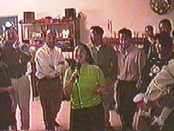

UNDAUNTED by Jorge's hecklings of "Sipsip! Sipsip!", Jovits stood her ground and successfully recited all her FAVORITE titos' and titas' full names from Maria Celina Concepcion (Ching) down to Maria Lourdes Escholastica Luz (Malu). But she didn't win any big prize.
A bit of advice for Jovits: The proper way is -- Maria Celina Concepcion, pray for us. Maria Leticia Lourdes, pray for us. Maria Cristina Cordapia, pray for us, Maria Dulce Corazon, pray for us, and so on...